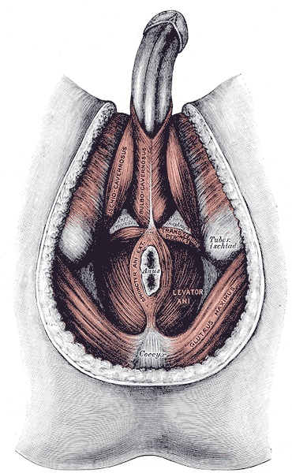

💪 Sức khỏe Nam giới
Sexual Health — Hormone Testing GuidelinesDeep dive⏱ 8 phút đọc
Khi Nào Nam Giới Cần Kiểm Tra Hormone? Hướng Dẫn Đọc Bảng Xét Nghiệm Chuẩn Y Khoa
Rất nhiều người đàn ông tự ý tìm đến các phòng khám tư hoặc tự mua hormone về tiêm chỉ vì cảm thấy mệt mỏi hay phong độ phòng the sa sút nhẹ. Hướng dẫn thực hành lâm sàng chính thức của Hiệp hội Nội tiết Hoa Kỳ (Endocrine Society) và Hiệp hội Tiết niệu Châu Âu (EAU) cảnh báo: Việc chẩn đoán suy giảm nội tiết nam đòi hỏi quy trình xét nghiệm nghiêm ngặt gồm ít nhất hai lần lấy mẫu máu độc lập vào buổi sáng kèm theo phân tích đầy đủ các chỉ số trục tuyến yên - tinh hoàn.
Nguồn nghiên cứu & Thiết bị: The Journal of Clinical Endocrinology & Metabolism & European Association of Urology (EAU Guidelines)•Màn hình App: Endocrine Diagnostic & Laboratory Screen•Chỉ số: Diurnal Blood Sampling, Total/Free T, SHBG, LH & Prolactin Differential
💡Điểm Cốt Lõi & Hành Động Thực Tế
Chỉ xét nghiệm hormone khi có các triệu chứng lâm sàng rõ rệt (mất ham muốn, mất cương buổi sáng, teo cơ, mệt mỏi mạn tính). Bắt buộc phải lấy máu lúc đói trước 10:00 sáng. Bảng xét nghiệm chuẩn phải bao gồm: Total T, Free T (hoặc tính qua SHBG + Albumin), LH, FSH, Prolactin và Estradiol nhạy cảm.
Khi Nào Bạn Thực Sự Cần Xét Nghiệm Hormone Nam Giới?
Không phải ai cảm thấy mệt mỏi sau một tuần thức khuya làm việc cũng cần đi xét nghiệm hormone. Theo Hướng dẫn Thực hành Lâm sàng của Hiệp hội Nội tiết Hoa Kỳ (Bhasin et al., JCEM), việc chỉ định xét nghiệm máu kiểm tra testosterone chỉ được khuyến nghị khi người bệnh xuất hiện đồng thời từ hai triệu chứng đặc hiệu sau đây:
- Các Triệu Chứng Đặc Hiệu Hàng Đầu:
1. Ham muốn tình dục sụt giảm rõ rệt và kéo dài (Low Libido).
2. Rối loạn cương dương thường xuyên, đặc biệt là sự biến mất hoàn toàn của hiện tượng cương buổi sáng (NPT).
3. Teo nhỏ thể tích tinh hoàn hoặc cảm giác đau tức vùng bìu.
4. Mất khối lượng cơ bắp và rụng lông nách, lông mu bất thường.
- Các Triệu Chứng Không Đặc Hiệu Kèm Theo: Mệt mỏi mãn tính dù ngủ đủ giấc, suy giảm khả năng tập trung (sương mù não), tâm trạng trầm cảm cáu bẳn và tăng tích tụ mỡ bụng dưới.

📊 Sơ Đồ Trục HPTA: Đánh giá toàn diện nồng độ hormone tuyến yên LH/FSH là chìa khóa vàng để tìm ra gốc rễ vấn đề nằm ở não bộ hay tại tinh hoàn. Nguồn sơ đồ: Wikimedia Commons ↗
3 Quy Tắc Bắt Buộc Để Kết Quả Xét Nghiệm Máu Chính Xác 100%
Nếu bạn lấy máu xét nghiệm sai thời điểm hoặc sai quy cách, kết quả sẽ hoàn toàn vô giá trị và có thể dẫn đến việc điều trị nhầm:
Quy Tắc Buổi Sáng (07:00 – 10:00 Sáng): Vì testosterone dao động theo nhịp sinh học ngày đêm, nồng độ đỉnh cao nhất chỉ xuất hiện vào đầu giờ sáng. Lấy máu sau 11:00 trưa hoặc vào buổi chiều sẽ cho ra kết quả thấp giả tạo từ 20% đến 40%.
Quy Tắc Nhịn Ăn (Fasting): Bắt buộc phải nhịn ăn ít nhất 8–10 tiếng trước khi lấy máu (chỉ được uống nước lọc). Nghiên cứu cho thấy một bữa ăn sáng giàu carbohydrate hoặc chất béo sẽ làm giảm nồng độ testosterone trong máu tạm thời tới 25% do phản ứng tăng tiết hormone đường ruột GLP-1 và insulin!
Quy Tắc "Xét Nghiệm Hai Lần Độc Lập" (Two-Confirmation Rule): Tuyệt đối không bao giờ chẩn đoán suy sinh dục chỉ dựa vào một lần xét nghiệm máu duy nhất. Nồng độ hormone có thể bị tụt tạm thời do một đêm mất ngủ hoặc một đợt cảm cúm. Bác sĩ bắt buộc phải yêu cầu bạn xét nghiệm lại lần thứ hai sau 2 đến 4 tuần để xác nhận kết quả.
Bảng Tra Cứu Toàn Diện Bộ Chỉ Số Nội Tiết Nam Giới
Khi nhận bảng kết quả xét nghiệm từ bệnh viện, hãy đối chiếu các chỉ số theo bảng chuẩn sau:
Tên Xét Nghiệm
Khoảng Tham Chiếu Chuẩn (Reference Range)
Ý Nghĩa Chẩn Đoán Khi Bất Thường
Total Testosterone (T toàn phần)
300 – 1.000 ng/dL (Tối ưu: 500–800)
Dưới 300 ng/dL: Ngưỡng cảnh báo suy sinh dục lâm sàng.
Free Testosterone (T tự do)
9 – 30 pg/mL (Chiếm ~1.5%–2% Total T)
Thước đo chính xác nhất về lượng hormone thực tế gắn vào thụ thể.
SHBG (Sex Hormone-Binding Globulin)
15 – 50 nmol/L
Quá cao (>50): Giam giữ hết testosterone, làm Free T giảm sụp đổ. Quá thấp (<15): Dấu hiệu đề kháng insulin, gan nhiễm mỡ.
LH (Luteinizing Hormone)
1.7 – 8.6 mIU/mL
T thấp + LH rất cao: Suy sinh dục nguyên phát (Tinh hoàn tổn thương). T thấp + LH rất thấp: Suy sinh dục thứ phát (Tuyến yên/Hạ đồi bị ức chế).
Prolactin
4.0 – 15.2 ng/mL
Tăng cao bất thường (>25): Ức chế ham muốn cực mạnh; cảnh báo u tuyến yên vi thể (Prolactinoma).
Estradiol (E2 nhạy cảm)
10 – 40 pg/mL
Hormone nữ ở nam giới; quá cao gây tích mỡ ngực (Gynecomastia) và giữ nước.
Giao Thức 4 Bước Đi Khám & Xét Nghiệm Nội Tiết Nam Khoa
Chuẩn Bị Sức Khỏe Tối Ưu Trước Ngày Lấy Máu: 3 ngày trước khi đi xét nghiệm: Ngủ đủ 8 tiếng mỗi đêm, không tập gym nặng kiệt sức, không uống rượu bia và kiêng xuất tinh 48 tiếng.
Yêu Cầu Bác Sĩ Chỉ Định Đầy Đủ Bộ Chỉ Số Trục HPTA: Không chỉ đo mỗi Total T. Hãy đảm bảo phiếu xét nghiệm có đủ: Total T, SHBG, Albumin, LH, FSH, Prolactin và Fasting Glucose.
Tính Toán Chỉ Số Free Testosterone Chuẩn: Nếu phòng xét nghiệm không đo trực tiếp Free T bằng phương pháp sắc ký miễn dịch cân bằng (Equilibrium Dialysis), hãy nhập chỉ số Total T, SHBG và Albumin vào công thức tính Vermeulen Calculator chuẩn quốc tế để ra con số Free T chính xác.
Tham Vấn Bác Sĩ Chuyên Khoa Nam Học (Andrologist / Urologist): Nếu kết quả xác nhận nồng độ hormone dưới ngưỡng chuẩn: Hãy cùng bác sĩ tìm kiếm nguyên nhân gốc rễ (mất ngủ, ngưng thở khi ngủ, béo phì, u tuyến yên, tác dụng phụ của thuốc) trước khi nghĩ đến việc dùng các liệu pháp tiêm hormone ngoại sinh TRT.
Tài Liệu Tham Khảo & Nguồn Y Khoa
Bhasin, S., Brito, J. P., Cunningham, G. R., et al. (2018).Testosterone Therapy in Men With Hypogonadism: An Endocrine Society Clinical Practice Guideline. The Journal of Clinical Endocrinology & Metabolism, 103(5), 1715–1744. Đọc trên PubMed ↗
Dohle, G. R., et al. (2019).EAU Guidelines on Male Hypogonadism. European Association of Urology Guidelines Office. Đọc trên EAU ↗
Caronia, L. M., et al. (2013).Abrupt decrease in serum testosterone levels after an oral glucose load in men: implications for screening for hypogonadism. Clinical Endocrinology, 78(2), 291–296. Đọc trên PubMed ↗
Vermeulen, A., Verdonck, L., & Kaufman, J. M. (1999).A critical evaluation of simple methods for the estimation of free testosterone in serum. JCEM, 84(10), 3666–3672. Đọc trên PubMed ↗
📚
Nguồn Tham Khảo Y Khoa & Nghiên Cứu Gốc
Bài viết này được tổng hợp và kiểm chứng từ các nghiên cứu y sinh học, hướng dẫn lâm sàng và tài liệu khoa học thiết bị đeo của The Journal of Clinical Endocrinology & Metabolism & European Association of Urology (EAU Guidelines).
💪 Men's Health
Sexual Health — Hormone Testing GuidelinesDeep dive⏱ 8 min read
When to Test Your Hormones: Clinical Guidelines for Total T, Free T, SHBG, LH & Prolactin
Countless men impulsively seek commercial hormone replacement clinics or self-administer exogenous androgens merely due to transient fatigue or bedroom frustration. Official clinical guidelines from the Endocrine Society and the European Association of Urology (EAU) caution that diagnosing male hypogonadism demands a rigorous diagnostic protocol requiring at least two independent early-morning fasting blood panels and differential gonadotropin profiling.
Clinical & Wearable Source: The Journal of Clinical Endocrinology & Metabolism & European Association of Urology (EAU Guidelines)•Mapped Screen: Endocrine Diagnostic & Laboratory Screen•Biometric: Diurnal Blood Sampling, Total/Free T, SHBG, LH & Prolactin Differential
💡Key Actionable Takeaway
Screen for hormone deficiency only in the presence of definitive clinical symptoms (loss of libido, absent morning wood, sarcopenia, chronic fatigue). Blood must be drawn fasting before 10:00 AM. A complete diagnostic panel must evaluate: Total T, Free T (calculated via SHBG and Albumin), LH, FSH, Prolactin, and sensitive Estradiol.
When Do You Truly Need Hormone Testing?
Transient fatigue after a demanding workweek is not an indication for hormone panels. According to the Endocrine Society Clinical Practice Guidelines (Bhasin et al., JCEM), testing is warranted only in the presence of multiple persistent specific symptoms:
- Primary Specific Symptoms:
1. Clinically significant loss of sexual desire (Low Libido).
2. Persistent erectile dysfunction, notably the complete absence of nocturnal and morning erections (NPT).
3. Palpable testicular atrophy or discomfort.
4. Loss of axillary/pubic hair and accelerated sarcopenia.
- Secondary Corroborating Clues: Chronic refractory fatigue, brain fog, depressive irritability, and expanding visceral waist circumference.
📊 The HPGA Diagnostic Axis: Evaluating LH and FSH alongside androgens determines whether dysfunction originates within the pituitary gland or the testes. Diagram source: Wikimedia Commons ↗
3 Mandatory Rules for 100% Accurate Blood Testing
Strict Morning Window (07:00 – 10:00 AM): Because testosterone follows a strict circadian diurnal cycle, peak concentrations occur early morning. Testing in the afternoon yields falsely depressed values by 20% to 40%.
Fasting Requirement: Blood must be drawn following an 8–10 hour overnight fast (water permitted). High-glycemic breakfasts trigger gut peptides and insulin spikes that acutely depress serum testosterone by up to 25% for hours.
The Two-Confirmation Rule: Never diagnose hypogonadism on a single lab panel. Acute illness or poor sleep temporarily suppresses androgens. Guidelines mandate repeating the test 2 to 4 weeks later before confirming diagnosis.
Comprehensive Reference Range Matrix for Male Androgens
Diagnostic Marker
Standard Reference Range
Clinical Interpretation
Total Testosterone
300 – 1,000 ng/dL (Optimal: 500–800)
Below 300 ng/dL: Clinical threshold for hypogonadism.
Free Testosterone
9 – 30 pg/mL (~1.5%–2% of Total T)
True metric of active hormone interacting with target receptors.
SHBG
15 – 50 nmol/L
High (>50): Traps testosterone, driving Free T down. Low (<15): Sign of insulin resistance, fatty liver.
LH (Luteinizing Hormone)
1.7 – 8.6 mIU/mL
Low T + High LH: Primary testicular failure. Low T + Low LH: Secondary central hypogonadism.
Female hormone in men; excess causes gynecomastia and fluid retention.
4-Step Practical Protocol for Endocrine Diagnostic Workups
Optimize Baseline Health Prior to Testing: For 3 days before blood draw: sleep 8 hours, avoid extreme workouts, abstain from alcohol, and maintain 48-hour ejaculatory abstinence.
Order the Complete Endocrine Panel: Request: Total T, SHBG, Albumin, LH, FSH, Prolactin, Sensitive Estradiol, and Fasting Glucose.
Calculate Accurate Free Testosterone: If equilibrium dialysis is unavailable, calculate Free T using the validated Vermeulen Formula combining Total T, SHBG, and Albumin.
Consult an Andrologist or Endocrinologist: If hypogonadism is confirmed, identify root causes (sleep apnea, prolactinoma, obesity) before considering lifelong exogenous Testosterone Replacement Therapy (TRT).
Clinical References & Scientific Sources
Bhasin, S., Brito, J. P., et al. (2018).Testosterone Therapy in Men With Hypogonadism: An Endocrine Society Guideline. JCEM, 103(5), 1715–1744. View on PubMed ↗
Dohle, G. R., et al. (2019).EAU Guidelines on Male Hypogonadism. EAU Guidelines Office. View on EAU ↗
Caronia, L. M., et al. (2013).Abrupt decrease in serum testosterone levels after oral glucose load in men. Clin Endocrinol. View on PubMed ↗
Vermeulen, A., et al. (1999).Critical evaluation of simple methods for estimation of free testosterone. JCEM. View on PubMed ↗
📚
Clinical Reference & Scientific Backing
This article is synthesized from peer-reviewed medical literature, clinical guidelines, and wearable biometric validation studies from The Journal of Clinical Endocrinology & Metabolism & European Association of Urology (EAU Guidelines).